Overview
apodienste helps German pharmacies run services such as polymedication analysis, blood pressure measurement and inhalation training. The patient drawer was originally built for call centres booking appointments, and the pharmacists who delivered the services found it hard to use. I redesigned it as a set of modules (appointments, documents and comments) held together by a guided service flow.
Results
-
80%
of core tasks completed on the first attempt in pre-launch testing (32 of 40 attempts: 5 participants, 8 tasks)
-
30%
faster task completion, measured through timed task analysis of the old and new flows
-
Fewer
process-related support tickets after release, according to the support team's report
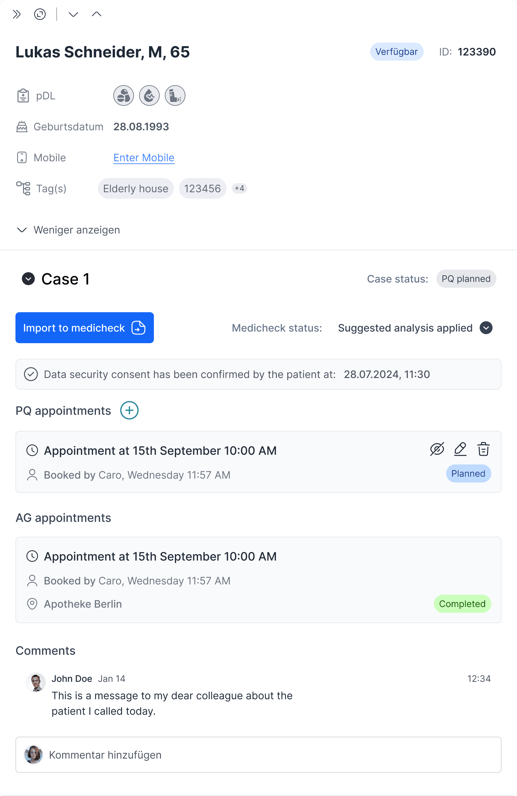
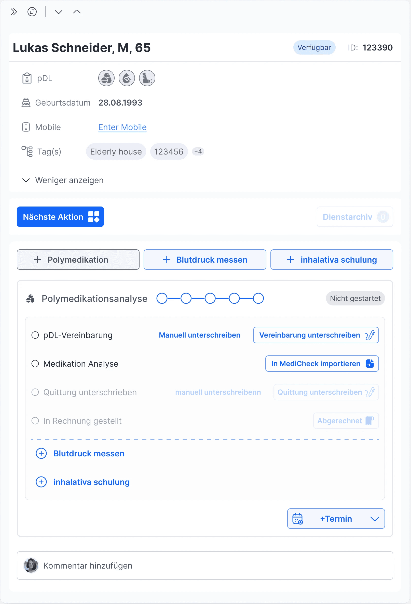
The problem
Stakeholder feedback and a heuristic evaluation of the existing drawer pointed to three issues:
- A confusing model. Pharmacists did not relate to the idea of "cases", and could not see why patient documents and case documents sat in different places.
- Too much at once. The drawer showed information that was not needed for the task in hand. Pharmacists searched for documents rather than being guided through a session.
- No room to grow. Every new service needed structural changes to the UI.
Opportunity
apodienste was adding new pharmacy services, and the drawer had to carry them all. If pharmacists, analysts and call-centre users could each follow a clear path through the same drawer, and new services could be added without restructuring the UI, the platform could grow its service range without retraining users each time.
Users
Three roles shared the drawer, each with different goals and time pressures:
- Call-centre users create services and book appointments. They needed confirmation that their work had been saved and handed on.
- Analysts prepare medication data before a session. They needed a structured overview of each patient.
- Pharmacists run the session with the patient. They needed a step-by-step flow for tasks and signatures.
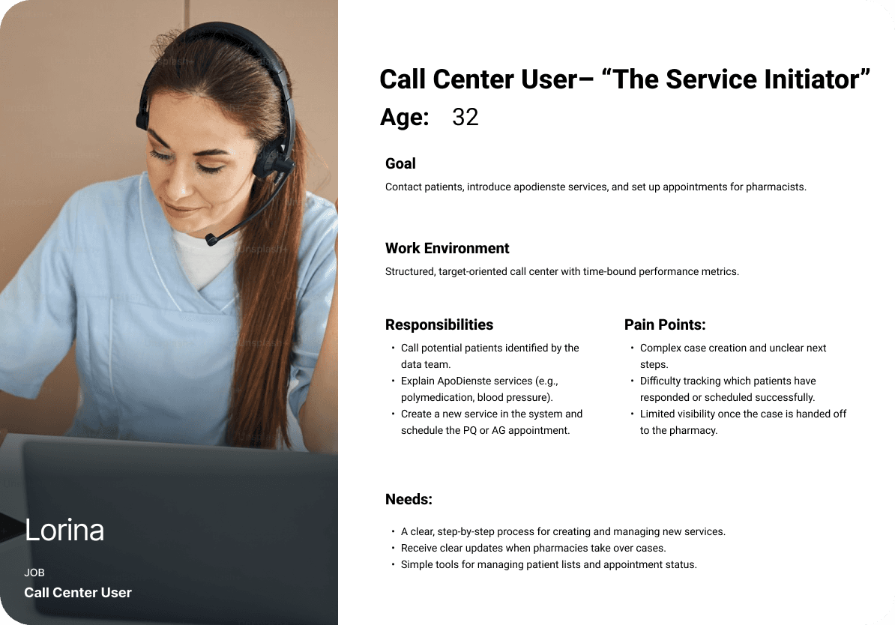
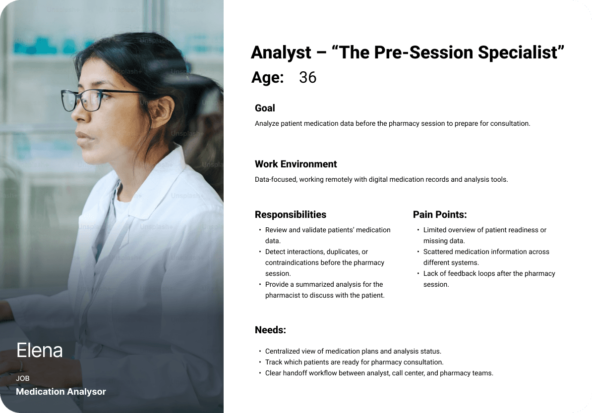
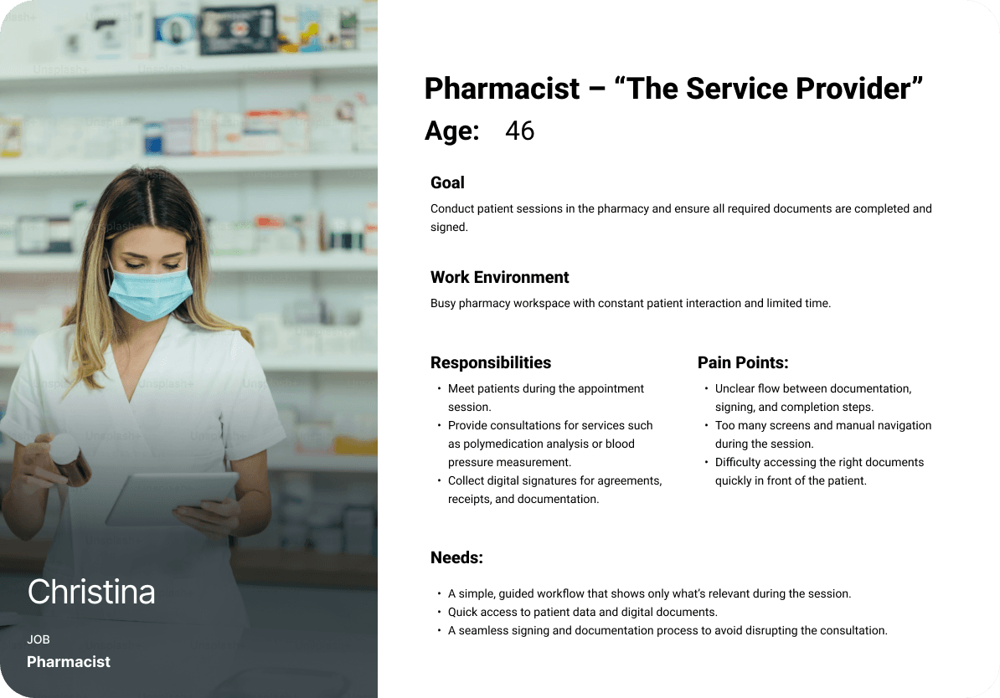
"I can't tell where to find the right documents for each patient — and I'm not even sure what a 'case' is supposed to mean here."
PharmacistConstraints
- Access to pharmacists was limited, so I worked with a small group rather than running large-scale interviews.
- The design had to fit the existing backend with minimal changes.
- Existing users already knew the old drawer, so the new one had to be learnable without retraining.
- There was no established industry pattern to benchmark against.
Process
01 DiscoverResearch
I combined stakeholder interviews, feedback from early pharmacy adopters, analysis of call-centre workflows and a heuristic evaluation of the existing drawer.
02 DefineProblem definition
I synthesised the research findings to identify the core pain points, and defined design goals focused on usability and flexibility.
"How might we improve the pharmacy service workflow in a scalable and intuitive way that accommodates the needs of multiple user groups — while ensuring efficiency, clarity and ease of use across different service types?"
Problem statement03 DevelopIterations
I explored four directions, reviewing each with stakeholders:
| Iteration | Idea | Why it did not hold |
|---|---|---|
| 1. A case per service | Tie each case to one service | Confusing when a patient needed several services |
| 2. Documentation modal | Move signing and uploads into their own window | Separated documents from the case and felt like a temporary fix |
| 3. Documentation tab by service state | Show only the documents needed at each step | High cognitive load, and it did not scale beyond a few services |
| 4. Service modules | Appointments, documents and comments as independent modules | Flexible, but it lacked hierarchy and guidance |
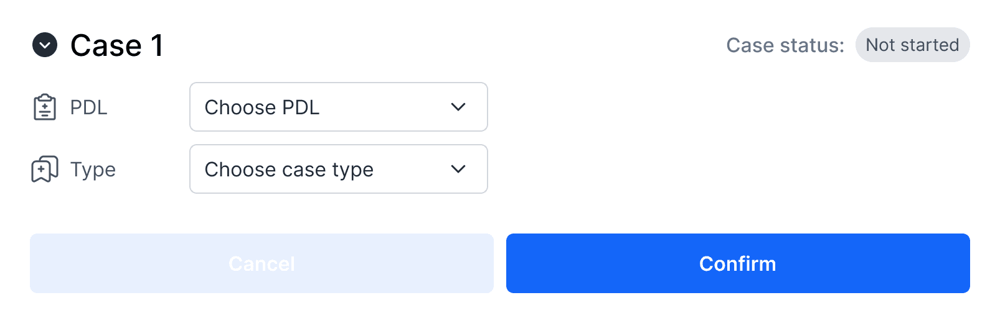
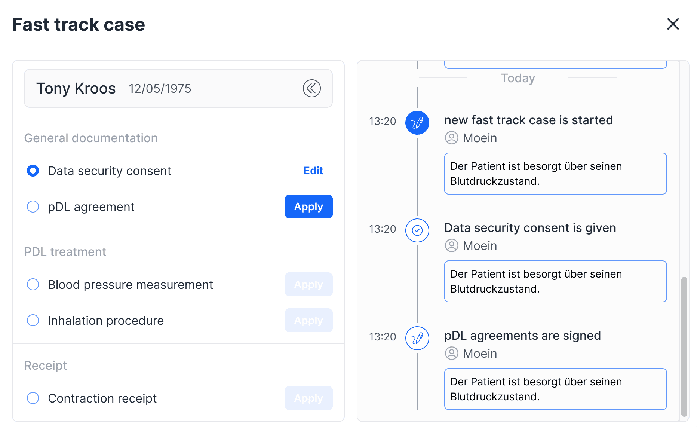
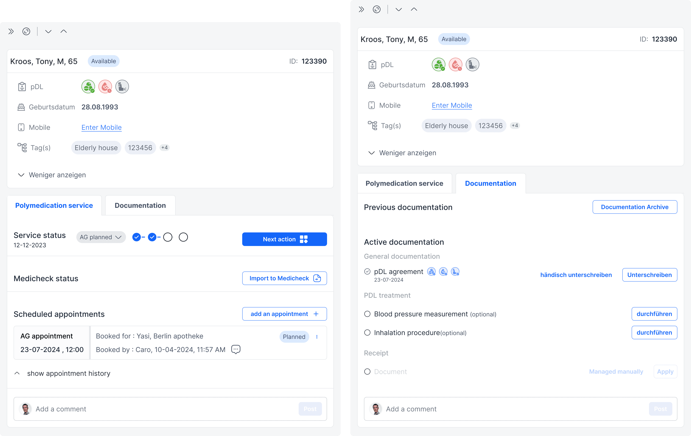
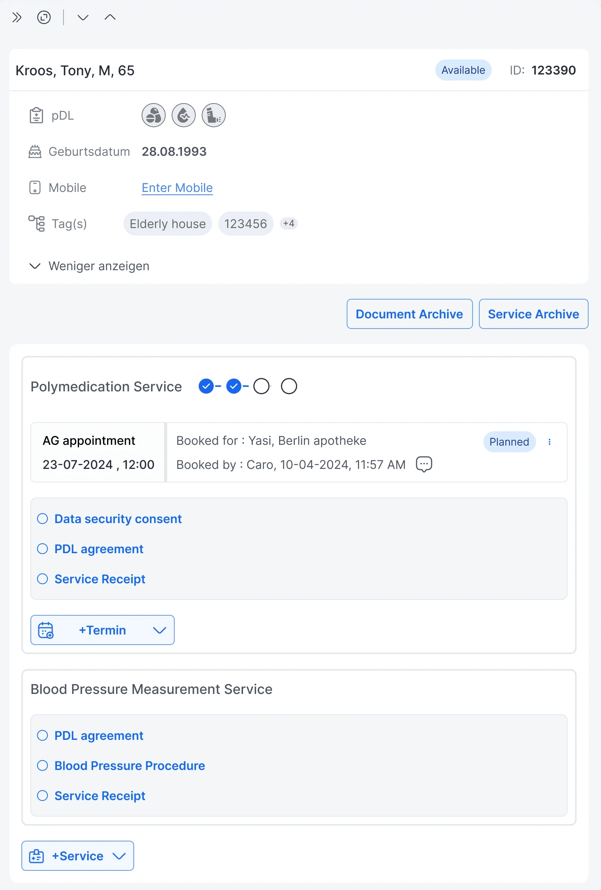
The shift
Iteration 4 showed that modules were the right building blocks, but they needed structure around them. I combined the modules with a guided flow: each service carries its own step tracker, and a "next action" bar tells the user what to do next. Users can still complete or revisit any step without losing context. Further rounds of detailed refinement with stakeholders led to the final design.
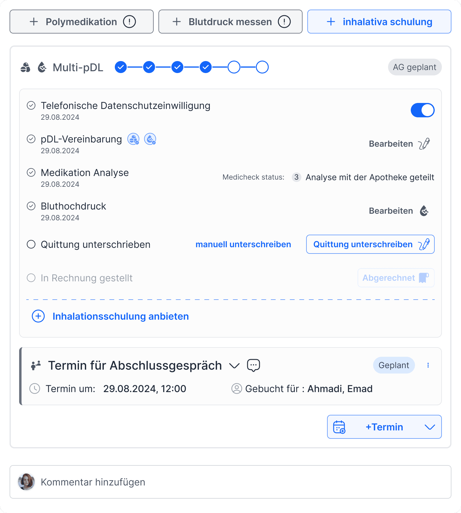
Testing
I ran discount usability testing on a high-fidelity prototype with 5 participants, a mix of pharmacists and call-centre users. Each completed 8 core tasks, including creating a service, setting an appointment, reviewing documentation and completing a patient session.
32 of 40 attempts succeeded first time (80%). Testing also showed three things to improve:
- Archive discoverability. Participants struggled to find and understand the document and service archives.
- Appointment confidence. Participants were unsure whether an appointment had been saved and linked to the right service.
- Progress clarity. The progress tracker needed stronger contrast and clearer step labels.
Handoff and onboarding
Over four grooming sessions with engineering, we worked through interaction details, API dependencies and system behaviour so the design fitted the existing backend. I handed off in two sprints with Figma specifications and component documentation. To support adoption, I created a Notion onboarding guide comparing the old and new workflows, and a Synthesia video walking through real scenarios.
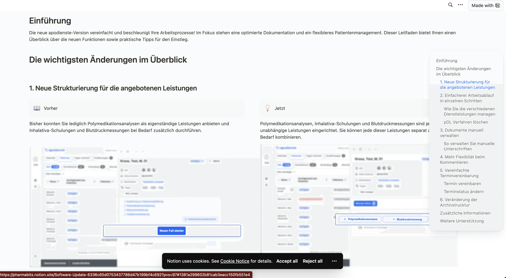
Outcomes
- Task completion during patient sessions was 30% faster, measured through timed task analysis.
- The support team reported fewer process-related tickets after release.
- Pilot pharmacies described the new flow as "logical", "well-organised" and "finally practical for daily use".
- Because each part of a service is a module, new services can be added without major UI or backend changes.
What I would do differently
- Spend more time understanding needs and defining the problem before moving into design.
- Stay in low fidelity for longer, to explore and set aside more directions with stakeholders before committing to detailed designs.